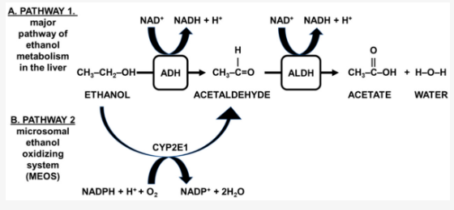

What You Will Learn
After reading this note, you should be able to...
- This content is not available yet.
Read More 🍪
Note Summary
This content is not available yet.
closeClick here to read a summary
- It has been estimated by the WHO that 4% of the burden of diseases & 3.2% of all deaths globally can be attributed to alcohol
- Alcohol is the leading cause of liver cirrhosis in developed countries
- ALD is the most important cause of cirrhosis in the Western world
- The clinical spectrum of ALD includes fatty liver, alcoholic hepatitis & alcoholic cirrhosis
- Alcohol consumption is declining in developed countries, whereas, the opposite is the case in developing countries where viral hepatitis is already prevalent
- Alcohol and viral hepatitis B and/or C have synergistic effect on the progression of liver disease to cirrhosis and hepatocellular carcinoma
- Alcohol implicated in > 50% of liver-related deaths in the US
- ALD accounts for about $3 billion annually in the US
- Okeke et al reported alcohol as the most important (75%) aetiology in 51 patients with liver biopsy in Jos
- However, Ndububa et al found a lower percentage of patients with significant alcohol intake (35.2%) in a study of 145 CLD patients in Ife (1987-2002)
- Quantity & duration are important in alcohol-induced morbidity (≥ 50g/day x ≥ 10 years)
- Daily drinking is more dangerous than intermittent consumption
- Liver injury is unrelated to the type of beverage; it is related more to the alcoholic content
- Only about 15 – 20% of alcohol abusers develop alcoholic hepatitis or cirrhosis
- Factors contributing to liver disease progression include:
- Sex
- Genetics (Alcohol dehydrogenase, Acetaldehyde dehydrogenase)
- Malnutrition
- Viral hepatitis (B or C)
- Drugs (Acetaminophen)
- Obesity
- Iron overload
- Quantity:
- Only 15% of alcoholics develop the disease
- Men, 40-80g/day—fatty liver
- 80-160g/day—hepatitis and cirrhosis
- Gender:
- Women exhibit increased susceptibility to ALD at >20g/day
- HCV infection:
- Concurrent infection (fuel to fire)
- Accelerated disease progression, more advanced histology and decreased survival rate
- Genetics:
- Alcohol DH, Acetaldehyde DH and polymorphisms of cytochrome P450 2E1
Mechanisms of injury in alcoholism include:
- Formation of acetylaldehyde adducts– an extremely reactive & toxic metabolite responsible for acute alcoholic hepatitis
- Mitochondrial injury
- Increased liver fat
- Immunological liver injury
- Fibrosis – sequel to hepatocyte necrosis
- The liver is the primary site of alcohol metabolism
- Oxidized by alcohol dehydrogenase (ADH) and microsomal ethanol oxidizing system (MEOS)
- ADH & MEOS oxidize the bulk of ethanol that gets to the liver to acetaldehyde
- Acetaldehyde dehydrogenase oxidizes acetaldehyde to acetyl CoA

Metabolism of alcohol
×

Metabolism of alcohol
- ADH-mediated ethanol oxidation is accompanied by reduction of NAD+ to NADH and oxidative stress
- Oxidative stress leads to the formation of free radicals which attack unsaturated lipid and initiate a chain reaction of lipid peroxidation
- Accumulated acetaldehyde reacts with amino acid residue of cellular proteins leading to formation of acetaldehyde adducts
- Acetaldehyde protein adducts stimulate collagen synthesis thereby causing hepatic fibrosis
- Chemical modification of biological molecules leads to stimulation of the host immune response and release of cytokines
- Inhibition of the synthesis of S-adenosyl methionine
- Endotoxaemia resulting from combined increased gut permeability and reduced RES (reticuloendothelial system) activity is thought to play a role in stimulating cytokine release as well
- The final common pathway is the positive stimulation of stellate cells to produce myofibroblasts and eventual collagen deposition
- Continuing alcohol ingestion leads to fat accumulation in the perivenular hepatocytes; goes on to involve the hepatic lobules
- Transition from fatty liver to alcoholic hepatitis may occur without abstinence from alcohol consumption
- Ballooning degeneration, spotty necrosis, polymorphonuclear infiltration, and fibrosis are the hallmark of alcoholic hepatitis
- Mallory bodies are present but not specific for ALD
- Cirrhosis is present in 50% of patients with biopsy-proven alcoholic hepatitis
- Fatty liver (60-100%)
- Alcoholic hepatitis (20-30%)
- Cirrhosis (10-20%)
Fatty Liver
- Usually asymptomatic but non-specific symptoms may occur, e.g., fatigue, malaise, abdominal discomfort, and anorexia
- Alcohol binge – the most salient feature in history
- Hepatomegaly – tender, firm, and smooth
- Absence of stigmata of chronic liver disease
- Differential diagnosis: Wilson’s disease (steatosis may occur occasionally especially in a young person with abnormal liver enzymes)
- Anorexia
- Weight loss
- Mild fever
- Tachycardia
Alcoholic Hepatitis
Alcoholic Hepatitis (Mild)
- Fatigue
- RUQ pain (Right Upper Quadrant pain)
- Dark urine
- Hepatomegaly (Enlarged liver)
- Jaundice
- Hepatic bruit (Vascular murmur over the liver)
- Repeated vomiting, hypotension with hyperdynamic circulation
- Signs of vitamin deficiencies e.g., beriberi, scurvy
Alcoholic Hepatitis (Severe)
- Diarrhoea with steatorrhoea (probably secondary to decreased biliary excretion of bile salts, pancreatic insufficiency, or direct toxic effect)
- Liver failure with encephalopathy, coagulopathy, asterixis (flapping tremor), and ascites
- Splenomegaly, Collateral vessels
- Hypogonadism, Palmar erythema
- Differential Diagnosis: Acute viral hepatitis, Drug-induced hepatitis, Acute cholecystitis, Choledocholithiasis
- Leg swelling
Liver Cirrhosis
Liver Cirrhosis (General)
- Haematemesis, Melena (bloody vomit, black tarry stools)
- Dizziness, Jaundice
- Fatigue
- Leg swelling
- Abdominal swelling, Shrunken liver
- Poor memory (amnesia)
- Emaciation
Liver Cirrhosis (Complications)
- Portal hypertension
- Gastrointestinal bleeding
- Ascites
- Encephalopathy
- Renal failure
- Splenomegaly
- Hepatorenal syndrome
- Sepsis
Laboratory Features
- LFT:
- AST elevated 2-7 fold but <400U/L
- ALT similar but AST/ALT ratio usually >1
- Elevated bilirubin + alkaline phosphatase
- Low albumin, but globulins are increased due to non-specific stimulation of RES
- Haematology:
- FBC—Macrocytosis
- PT—deranged in severe liver disease
- Other blood chemistry tests:
- Elevated GGT, hypertriglyceridemia, and hypercholesterolemia
- USS: fatty liver, determines liver size, portal vein flow reversal, ascites, and intra-abdominal collaterals
Diagnosis of Alcoholic Liver Disease (ALD)
- History of prolonged or significant alcohol intake
- Physical signs of CLD (Chronic Liver Disease)
- Risk factors
- Exclude other causes
- Liver biopsy may not be necessary except to treat potentially reversible disease or guide treatment options
Surrogate laboratory markers:
- γ-glutamyl transferase, AST:ALT ratio > 2
- ↑ Rbc mean corpuscular volume (MCV)
- Carbohydrate deficient transferrin
- Macrocytosis & leucocytosis (polymorphs)
- Serum sialic acid
- Serum levels of intact N-terminal propeptide of Type III collagen
- Hypertriglyceridemia & ↑ serum uric acid
- Ketoacidosis
- Abstinence
- Nutritional support
- Corticosteroids
- Pentoxifylline
- Anti-TNF therapy e.g. Infliximab
- Propylthiouracil
- Colchicine
- Polyenylphosphatidylcholine
- S-adenosylmethionine (an antioxidant)
- Liver transplantation and stem cell therapy
Abstinence
Together with
- Early and appropriate medical care
- Alcohol Counseling programme
Can halt progression of cirrhosis and reverse alcoholic hepatitis to an extent and fatty liver completely.
Nutritional support
Mortality due to alcoholic hepatitis is closely correlated with severity of protein-calorie malnutrition, which is due to:
- Poor intake
- Decreased intestinal assimilation and hepatic storage
- Parenteral/enteral supplementation
Their efficacy, however, are unproven.
Steroids
- These ameliorate the inflammatory response accompanying the disorder
- They reduce cytokine production
- Suppress the formation of acetaldehyde adducts
- Inhibit the production of collagen
- Potential candidates, however, have numerous contraindications for their use such as coincidental bacterial infections, GI bleeding or renal failure
- Benefit is not widely agreed upon
Pentoxifylline
- This is a nonselective phosphodiesterase inhibitor of TNF production
- Acts by inhibiting the output of TNF-alpha by modulating the transcription of its gene
- Decrease mortality by 40% in patients with severe alcoholic hepatitis (DF >32) particularly by decreasing the incidence of hepatorenal syndrome
Anti-TNF therapy
- Infliximab, a monoclonal antibody to TNF-α is used
- This improved the discriminant score but not histology
Phosphatidylcholine
- This opposes alcohol-induced fibrosis by decreasing the activation of stellate cells to transitional cells, and possibly also by stimulating collagenase activity
- It modulates TNF-α as well as decreases the activities of cytochrome P450 2E1
- Most of the liver damage caused by alcohol is attributed to alcohol metabolism and the by-products of that metabolism.
- Liver injury may be caused by the direct toxicity of alcohol by-products and also by inflammation that is induced secondarily by these same compounds.
- Abstinence remains the cornerstone of management, others include: nutrition, steroids, anti-inflammatory agents, antioxidants, and agents targeting fibrosis.
- Liver transplantation is the ultimate option for selected patients with liver failure due to chronic ALD.
Practice Questions
Check how well you grasp the concepts by answering the following questions...
- This content is not available yet.
Read More 🍪
Contributors
Jane Smith
She is not a real contributor.
John Doe
He is not a real contributor.
Send your comments, corrections, explanations/clarifications and requests/suggestions